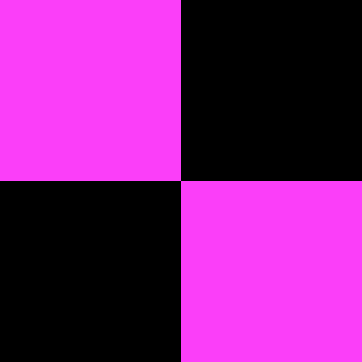

Contribution graph
View profile ↗
Consistency over time.
MonWedFri

I'm Spooky, a student and developer who likes turning ideas into real software. I build tools, experiment with systems, and enjoy making everyday workflows simpler, faster, and more useful.
Live repository data, commit history, and contribution activity from GitHub.
Loading recent GitHub activity…
I like understanding how things work under the hood, then using that knowledge to make something people can actually use.
I'm a student who enjoys coding and turning ideas into working software. Most of my time goes into building apps, exploring new technologies, and figuring out better ways to solve practical problems.
I'm especially interested in Rust, desktop applications, automation, privacy-focused software, and open-source tools. I like projects where I can learn something new while making something useful.
Outside the editor, I'm usually exploring technology, playing Minecraft, or sketching out the next project. There is always another idea waiting in the queue.
A closer look at what each project does, how it fits together, and the technologies behind it.
Loading your public repositories…
A practical toolkit, not a checklist. I choose technologies based on what a project needs.
Loading languages from your repositories…
The principles behind the projects matter just as much as the code that ships them.
People should be able to inspect, understand, modify, and improve the tools they use.
Software should solve real problems and make workflows simpler, not add complexity for decoration.
Users deserve transparency and meaningful control over their data and their software.
Follow my projects, see what I'm making, or get in touch through one of my public profiles.